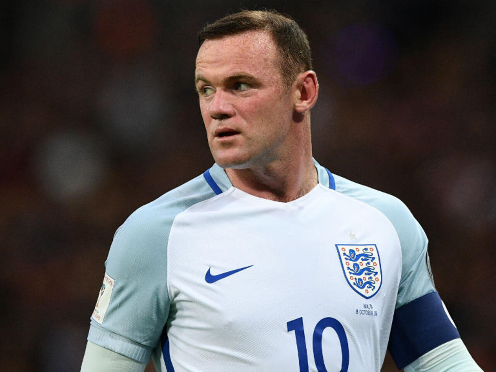
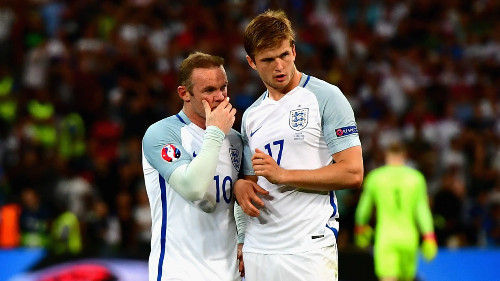

Bùm!
Mọi thứ trở nên điên loạn, chóng vánh.
Rồi cảm giác đó bắt đầu - một khoái cảm thỏa mãn không thể tin nổi mà tôi có được, khi ghi bàn ở Premier League. Giống như cảm giác mỗi khi tôi đập một quả bóng golf tuôn ra khỏi mặt gậy, và nhìn nó nhỏ giọt lên thảm màu xanh lá.
Đó là một đỉnh cao - một cơn sốt quyền lực điên cuồng.
Đó là một con sóng xúc cảm - nhưng nó đưa tôi đến trạng thái không giống bất kỳ thứ gì khác.
Cái cảm giác ghi một bàn cho Manchester United thật kỳ vĩ, ích kỷ và gàn dở. Tôi nghĩ nếu những cảm xúc đó được đóng chai, tôi có thể là thức uống năng lượng tốt chưa từng có.
Sau một quãng bồi hồi, tôi đang ở tốc độ bình thường trở lại, tôi bừng tỉnh.
Mọi thứ đều rõ nét: âm thanh đó, một tiếng rống đủ lớn để đinh tai, như máy bay cất cánh; đôi chân tôi nhức mỏi, mồ hôi lăn dài trên cổ, bùn trượt trên bộ áo đấu. Mỗi lúc một ồn hơn; nó quá lớn, nó ở ngay trên đầu tôi. Ai đó đang nắm lấy áo tôi, trái tim tôi nhảy khỏi lồng ngực. Đám đông đang hát vang tên tôi:
“Rooney!”
“Rooney!”
“Rooooo-neeee!”
Không có cảm giác nào trên thế giới này tuyệt bằng.
Sau đó, tôi ngước lên và nhìn bảng tỷ số.
Ngày 12 tháng 2 năm 2011
United - City: 2 - 1
Ghi bàn!
Rooney, phút 77
Tôi là ai và tôi đã trải qua những gì để trở lại là chính mình trong chốc lát, mê đắm, giống như một võ sĩ quyền anh đang bừng tỉnh sau khi hít tuýp muối tăng hưng phấn. Tôi là Wayne Rooney. Tôi đã chơi bóng ở Premier League kể từ năm 2002 và tôi vừa ghi bàn trong trận derby Manchester - có lẽ là trận đấu quan trọng nhất mùa giải với những người hâm mộ nửa đỏ của thành phố. Một bàn thắng đặt những người hàng xóm ồn ào của chúng tôi vào vị thế khác, nơi họ thuộc về. Pha làm bàn để nhắc nhở họ rằng United có bề thế lịch sử và thành công hơn họ lúc này. Pha làm bàn để cảnh báo phần còn lại của đất nước mà chúng tôi đang trên đường chinh phục chức vô địch Premier League.
Bàn thắng đỉnh nhất sự nghiệp của tôi
Khi đứng dang rộng hai tay, ngửa đầu ra sau, tôi có thể cảm thấy từ phía sau là nỗi căm ghét của những người hâm mộ City, nó giống như dòng tĩnh điện. Sự lăng mạ, tiếng gào thét và chửi rủa dội vào tôi. Họ giơ ngón tay giữa về phía tôi, mặt đỏ bừng. Tất cả họ đều bị kích động, nhưng tôi không quan tâm. Tôi biết họ ghét tôi ra sao, họ tức giận như thế nào. Tôi hiểu nguồn cơn đó từ đâu, bởi tôi vẫn nếm trải những cảm xúc tương tự bất cứ khi nào tôi thất bại.
Lần này, họ bị tổn thương, còn tôi thì không.
Tôi biết chẳng gì tuyệt hơn thứ này.
Tôi đã ghi được hàng trăm bàn thắng trong suốt thời gian chinh chiến ở Premier League cùng United và Everton; ghi bàn tại giải quốc nội, đấu cúp, trận chung kết, giao hữu vô thưởng vô phạt, trận đấu tập. Nhưng pha lập công này đặc biệt hơn cả.
Khi chạy trở lại vòng tròn trung tâm, tai vẫn còn ù và tôi tiếp tục trở lại trạng thái đó. Điều này thật nực cười, biết thế, nhưng tôi e rằng mình sẽ không bao giờ cảm thấy như thế một lần nào nữa. Tôi muốn nhớ về những gì đã xảy ra, để hồi tưởng lại khoảnh khắc ấy vì nó thật tuyệt.
Chúng tôi đã phải chịu áp lực, tôi biết điều đó, tỷ số hòa 1-1, thế trận thực sự chặt chẽ. Trong những giây trước khi làm bàn, tôi cố gắng trả bóng lại cho đồng đội trên hàng công, Dimitar Berbatov - một bản đúc của Andy Garcia trong Bố già phần III; nguy hiểm như chính Andy Garcia - nhưng cú chạm của tôi quá mạnh. Tôi dùng thừa lực. Tim tôi giật nảy lên trong lồng ngực.
City có thể thoát ra từ đây.
May mắn thay, Paul Scholes - anh bạn mà chúng tôi gọi là bộ điều hướng vệ tinh, vì những đường chuyền gần như được điều khiển bằng máy tính của anh ấy, tiền vệ có lẽ là xuất sắc nhất từng chơi ở Premier League - đã đón lõng quả bóng và chuyền nó cho Nani, cầu thủ chạy cánh của đội đang ở rìa vòng cấm.
Cậu ấy thực hiện vài nhịp chạm, dẫn bóng bằng ngón chân, lướt trên mặt cỏ như một vũ công trong chương trình “Strictly Come Dancing”, hơn là một cầu thủ bóng đá. Rồi Nani tung một đường chuyền vượt qua hàng phòng ngự của City và hướng về phía tôi, quả tạt của anh làm lệch nhịp một hậu vệ, bóng dần đi chậm lại.
Tôi thấy một khoảng trống mở ra trong vòng cấm, giữa bộ đôi trung vệ hộ pháp Lescott và Vincent Kompany của City. Tôi di chuyển và sẵn sàng đón đường chuyền sắp tới. Chạy vào khoảng không vài mét, đoán xem quả bóng sẽ hạ cánh ở đâu, các giác quan của tôi đang hoạt động khắp nơi.
Thật khó giải thích với những ai chưa bao giờ thi đấu hoặc cảm thấy áp lực khi phải trình diễn trước đám đông, nhưng chơi bóng ở Old Trafford giống như chạy vòng quanh trong một quả bubble. Nó thực sự bí bách, ngột ngạt.
Tôi có thể ngửi thấy mùi cỏ, tôi có thể nghe thấy đám đông, nhưng tôi không thể biết bài gì đang được hát. Mọi thứ đều bị bóp nghẹt, giống như khi tôi ở dưới nước trong hồ tắm nước nóng: Tôi có thể nghe thấy tiếng la hét và té nước từ mọi người xung quanh, nhưng không có gì là rõ ràng, tôi không thể nhận ra bất kỳ giọng nào. Tôi thực sự không thể nghe thấy những gì mọi người đang thét.
Trên sân cỏ cũng vậy. Tôi có thể nghe thấy một số âm thanh nhất định khi trận đấu chậm lại trong giây lát. Chẳng hạn như khi tôi thực hiện một quả phạt góc hoặc pha đá phạt và có một tiếng ùng ục lạ kỳ của 20.000 chiếc ghế lò xo bung lên ở một góc sân phía sau tôi. Như thể tôi đứng trên quả bóng, mọi người chồm dậy, vươn cổ xem. Nhưng chẳng mất bao lâu, tiếng ồn lại bị chặn. Sau đó, tôi trở lại dưới nước. Trở lại trong quả bubble.
Trái bóng đang đến với tôi.

.Sự chệch hướng đã thay đổi quỹ đạo đường chuyền của Nani, đưa bóng đi cao hơn tôi nghĩ, điều này giúp tôi có thêm một giây để vào vị trí, lấy lại thăng bằng và định thần: Tôi đang thử điều này. Hai cẳng tôi rã rời, nhưng bằng tất cả sức lực từ phía sau gót, tôi vung chân phải lên không trung cao hơn cả vai để tung cú đá quá đầu, một màn vô-lê lộn nhào. Tôi biết đó là một cú đá được ăn cả ngã về không, thứ sẽ khiến bản thân trở nên thật ngớ ngẩn nếu chổng vó.
Nhưng không!
Tôi tiếp xúc chuẩn với quả bóng và nó phóng vào góc cao. Tôi cảm nhận được điều đó, nhưng không nhìn thấy nó. Khi tôi xoay người giữa không trung, dù cố gắng theo dõi đường bay từ cú đá của mình, tôi không thể nhìn thấy bóng đã bay đi đâu, nhưng tiếng rống đột ngột của sự huyên náo cho tôi biết mình đã làm bàn. Tôi lăn qua và thấy Joe Hart, thủ môn của Man City đứng chôn chân, hai tay dang rộng kiểu như không thể tin nổi; ở phía sau, quả bóng đang lập bập xoay tròn trong khung thành.
Nếu chơi bóng như thể đang ở dưới nước, thì việc làm bàn giống như bay lên không trung.
Tôi có thể thấy và nghe được tất cả, mọi thứ đều vô cùng rõ ràng. Những khuôn mặt trong đám đông, hàng vạn người đang hò hét và hớn hở. Những người đàn ông nhảy cẫng lên như những đứa trẻ. Trẻ em thì la hét, vẫy cờ với niềm mê thích. Mọi hình ảnh đều sắc nét. Tôi thấy màu áo bib của các nhân viên an ninh trên khán đài. Tôi có thể thấy những tấm biểu ngữ được treo trên khán đài Stretford End: “Mỗi Manc là một tín đồ ti vi”; “Một tình yêu”. Nó giống như chuyển từ màn hình trắng đen sang màu, với tiêu chuẩn độ nét cao chỉ bằng một cú nhấn vào điều khiển.
Trong đám đông, mọi người đang mất trí; họ nghĩ trận này gần như đã thắng.
Từ suýt để mất bóng đến bàn thắng ấn định vào góc cao: thật đáng sợ khi nhận ra ranh giới ở bóng đá đỉnh cao rất hẹp. Trong một thời gian dài, sự khác biệt giữa chiến thắng và thất bại rất mong manh. Đó là lý do tại sao đây là môn thể thao đỉnh nhất thế giới.
Chúng tôi kết thúc trận đấu với tỷ số 2-1. Sau đó, mọi người tập trung quanh tôi trong phòng thay đồ, họ muốn nói về bàn thắng. Nhưng tôi đã rã rời, kiệt sức; tất cả đều đã trút hết trên sân, với cú đá trên không. Phòng thay đồ đang xôn xao; Rio Ferdinand đang xuýt xoa.
“Chà”, anh ấy nói.
Patrice Evra, hậu vệ cánh của chúng tôi gọi đó là “tuyệt phẩm”.
Sau đó, huấn luyện viên trưởng đi vào phòng thay đồ, trong chiếc áo khoác đen lớn; trông ông thật phấn khích. Ông đã hò hét, hò hét và hò hét trên các đường biên của Old Trafford trong hơn một phần tư thế kỷ; ông đã quán xuyến và truyền cảm hứng cho một số cầu thủ vĩ đại nhất lịch sử Premier League. Ông đã ký hợp đồng đưa tôi đến câu lạc bộ lớn nhất thế giới. Sếp của câu lạc bộ thành công nhất trong bóng đá hiện đại.
Ông đi vòng quanh chúng tôi và bắt tay tất cả như cách ông vẫn làm sau mỗi trận thắng. Tôi biết đến điều này kể từ ngày ký hợp đồng với United. Thật may, tôi đã có rất nhiều cái bắt tay.
Ông cho tôi biết: “Khoảnh khắc tuyệt diệu, Wayne, bàn thắng rất cừ.”
Tôi gật đầu. Tôi quá mệt để đáp lời, nhưng nếu có thể, tôi sẽ không nói bất cứ điều gì.

.Đừng hiểu sai ý tôi, không gì tốt hơn việc huấn luyện viên trưởng nói làm rất tốt - nhưng tôi không cần. Tôi biết khi nào mình đã chơi tốt và tệ. Tôi không nghĩ nếu huấn luyện viên trưởng nói tôi đã chơi tốt, tức là tôi đã chơi tốt. Tôi hiểu trái tim mình mách bảo gì.
Sau đó, ông nói rằng đó là bàn thắng đẹp nhất mà ông từng thấy tại Old Trafford. Ông đã ở câu lạc bộ này đủ lâu và chứng kiến nhiều tay săn bàn cừ khôi đến và đi trong triều đại của mình.
Huấn luyện viên trưởng chịu trách nhiệm về mọi thứ và ông kiểm soát cảm xúc lẫn thể chất của các cầu thủ tại Manchester United. Trước trận đấu, ông công bố đội hình thi đấu và đôi khi tôi có cùng một cảm giác lo lắng, thứ mà tôi từng trải qua mỗi khi huấn luyện viên ở trường ghim danh sách xuất phát vào bảng thông báo. Trong suốt một trận đấu, nếu chúng tôi bị dẫn bàn nhưng chơi tốt, ông ấy hô hào chúng tôi cứ tiếp tục. Ông biết sự cân bằng đang đến. Ông thôi thúc chúng tôi chiến thắng. Rồi một lần, tôi biết đội sẽ thắng bởi hai hoặc ba bàn ở hiệp một và ông đã nổi điên khi chúng tôi ngồi xuống trong phòng thay đồ.
Chúng ta đang chiến thắng. Có chuyện gì với ông ấy vậy?
Rồi tôi hiểu ra.
Ông không muốn chúng tôi tự mãn.
Giống như hầu hết các huấn luyện viên trưởng, ông đánh giá cao bóng đá đẹp, nhưng ông còn đề cao những người chiến thắng hơn. Mong muốn chiến thắng của ông lớn hơn ở bất cứ ai mà tôi từng biết, và điều đó ảnh hưởng lên tất cả chúng tôi.
Điều buồn cười là, tôi nghĩ chúng tôi khá giống nhau. Cả hai có một quyết tâm lớn để thành công và điều đó có rất nhiều liên quan đến nền tảng giáo dục của chúng tôi. Khi còn nhỏ, chúng tôi đã được bảo rằng nếu muốn làm tốt, phải đấu tranh và nỗ lực hết mình vì nó. Đó là cách tôi được nuôi dưỡng. Tôi nghĩ ông ấy cũng vậy. Và khi chúng tôi giành được thứ gì đó, chẳng hạn như danh hiệu Premier League hoặc Champions League, chúng tôi đủ ngoan cố để bám vào thành công ấy. Đó là lý do tại sao chúng tôi rất cố gắng, để là những người trên đỉnh lâu nhất có thể. Mọi người bắt đầu xô đẩy nhau quanh một ti vi nhỏ ở góc phòng. Nó được đặt ở đó trong nhiều năm và các huấn luyện viên luôn bật nó để phát lại trận đấu, mỗi khi có một sự cố gây tranh cãi hoặc có thể là một tình huống thổi phạt đền không được đưa ra - và trong một vài trường hợp, huấn luyện viên trưởng cũng có thể chỉ ra với bất kỳ ai muốn nghe. Lần này, tôi muốn xem bàn thắng của mình. Mọi người cũng vậy.
Một trong những huấn luyện viên cầm cái điều khiển và tua đến phút thứ 77.
Tôi thấy cú chạm bóng thừa lực của mình, Scholesy chuyền cho Nani.
Tôi nhìn thấy quả tạt của cậu ấy.
Rồi tôi chăm chú, nó giống như một trải nghiệm kỳ lạ bên ngoài cơ thể, khi tôi tung mình lên không trung và sút mạnh bóng vào mặt lưới. Nó có vẻ không giống thật.
Tôi nghĩ tất cả các cầu thủ bóng đá đi ngủ và mơ về những bàn thắng tuyệt vời: rê bóng quanh sáu người và phóng nó qua thủ môn hoặc bắn một quả vào từ khoảng cách 25 m. Ghi bàn từ một cú đá xe đạp chổng ngược là cách mà tôi luôn mường tượng.
Tôi vừa ghi một bàn thắng trong mơ tại trận derby Manchester.
“Chà”, Rio lắc đầu và lần thứ hai nói như thế.
Tôi biết ý của anh ấy là gì. Tôi ngồi trong phòng thay đồ, mồ hôi vẫn nhễ nhại, cố gắng sống trong khoảnh khắc này càng lâu càng tốt, bởi những giây phút như thế rất hiếm. Tôi vẫn có thể nghe thấy những người hâm mộ United đang hò hát bên ngoài, như xát thêm muối vào City, và tôi tự hỏi đến khi nào mình sẽ lại có được một bàn đỉnh như thế.
Tôi đã chơi ở Premier League 10 năm nay. Có lẽ tôi đang ở lưng chừng sự nghiệp - thứ cảm giác kỳ lạ. Thời gian trôi qua thật nhanh. Nó làm tôi bận lòng một chút, nhưng tôi vẫn cho rằng những năm tháng đẹp nhất của bản thân đang ở phía trước, rằng còn rất nhiều điều nữa sắp tới. Có vẻ như chỉ năm phút trước, tôi đã có trận ra mắt cho Everton trước Tottenham vào tháng 8 năm 2002. Các cổ động viên của Spurs đã tập trung ở một góc khán đài của Goodison Park. Khi tôi chạy vào sân, họ bắt đầu hát về tôi:
“Cậu là ai?”
Bất cứ khi nào tôi chạm vào bóng:
“Cậu là ai?”
Họ không hát như thế với tôi nữa. Thay vào đó, họ chỉ la ó, chửi bới, lăng mạ và sỉ vả tôi. Buồn cười thật!
Trong 10 năm kể từ khi ra mắt, tôi đã làm được rất nhiều điều. Từ năm 2002 đến 2004, tôi chơi cho Everton, đội bóng mà tôi cổ vũ khi còn là một cậu bé. Tôi đã trở thành cầu thủ trẻ nhất đại diện cho tuyển Anh vào năm 2003, trước khi Theo Walcott của Arsenal có được kỷ lục đó. Năm 2004, tôi ký hợp đồng với Man United với mức phí hơn 25 triệu Bảng và trở thành cầu thủ ghi nhiều bàn thắng nhất Premier League cho câu lạc bộ. Trong cùng năm, tại giải vô địch châu Âu, các cầu thủ Anh đặt cho tôi biệt danh “Wazza”; cách gọi như đã gắn chặt.
Tôi đã giành được 4 chức vô địch Premier League, 1 chức vô địch Champions League, 2 League Cup, 3 FA Community Shield và 1 FIFA Club World Cup. Tôi đã ghi hơn 200 bàn thắng cho câu lạc bộ và đội tuyển quốc gia, đồng thời bị đuổi khỏi sân 5 lần. Sẽ là lừa dối nếu tôi nói với bạn rằng tôi không yêu từng phút đó. Thôi, được rồi, có thể không phải những tấm thẻ đỏ và án treo giò, nhưng mọi thứ khác đúng là như vậy.
Điều buồn cười là, tôi vẫn cảm nhận được sự phấn khích và hưng phấn như đã từng diễn ra vào đêm trước màn ra mắt giải đấu, trong màu áo Everton hồi năm 2002. Ngày trước trận đấu, dù sân nhà hay sân khách, luôn có cảm giác như đêm Giáng sinh. Khi đi ngủ, tôi sẽ thức giấc 2 hoặc 3 lần trong đêm và lăn qua lăn lại để canh đồng hồ báo thức.
Chậc. Lúc này mới là 2 giờ sáng.
Bồn chồn và sự mong đợi đã ở đó cho đến giây phút chúng tôi vào trận.
Tuy nhiên, tôi đã phải trả giá. Về mặt thể chất, tôi đã bị hành hạ một chút trong những năm qua; bị chèn ép bởi các trung vệ khổ “Người máy biến hình”, hay cơ bắp của tôi bị dập nát do những cú ngã lên, đẩy vai, tắc bóng một mất một còn, ngày qua ngày, chúng khiến tôi bị bầm dập.
Khi tôi thức dậy vào buổi sáng sau một trận đấu, tôi phải vật lộn để đi được trong nửa giờ đầu tiên. Hơi nhức. Không có tình trạng này khi tôi còn là một thanh niên. Tôi nhớ đôi khi kết thúc buổi tập hoặc thi đấu với Everton và United, tôi muốn chơi thêm nữa. Có một sân nhỏ trong vườn và tôi thường chơi trong đó với bạn bè. Sau khi tập luyện với Everton, tôi thường chơi thêm ở một trung tâm giải trí địa phương, hoặc chúng tôi thường đá bóng trên đường phố ở Croxteth, thuộc Liverpool, nơi tôi lớn lên với mẹ, bố cùng các cậu em trai Graham và John. Có một nhà trẻ đối diện với nhà tôi. Thời điểm nó đóng cửa trong ngày, họ sẽ đóng một số cửa chớp để tạo ra một khung thành hữu ích. Tôi thích chơi ở đó. Sau khi ra mắt đội tuyển Anh vào năm 2003, tôi đã được chụp cảnh đang đá quả bóng vào nhà trẻ đó trong màu áo tuyển Pháp.
Bóng đá đã có một tác động lớn đến cơ thể của tôi, vì tôi thi đấu dựa trên tốc độ và sức mạnh. Cường độ cao. Là một tiền đạo, tôi cần phải hoạt động chăm chỉ mọi lúc. Tôi cần phải sắc bén, đồng nghĩa là thể lực của tôi phải bền bỉ để chơi tốt. Có lẽ sẽ khác nếu tôi là một hậu vệ cánh. Tôi có thể ẩn mình một chút, thực hiện ít pha chạy vào phần sân của đối phương hơn và nhanh chóng rời khỏi đó. Là một tiền đạo của Manchester United, không có chỗ cho sự ẩn mình. Tôi phải làm việc siêng năng nhất có thể, nếu không, huấn luyện viên trưởng sẽ rút tôi khỏi sân hoặc cho tôi ngồi ngoài ở trận tiếp theo. Không có chỗ cho thất bại hay vị trí thứ hai tại câu lạc bộ này.
Nếu có một mặt trái nào trong cuộc đời tôi thì đó chính là áp lực của việc sống trong mắt công chúng. Tôi chỉ muốn một ngày không ai biết đến tôi, để có thể làm những việc bình thường, đi đến các cửa hàng và không bị mọi người nhìn chằm chằm hay chụp ảnh.
Thậm chí, chỉ cần có thể đi chơi đêm với bạn bè và không bị ai chỉ trỏ cũng thật tuyệt. Vào một ngày cuối tuần, trước khi các trận đấu bắt đầu, một số người bạn của tôi đến cửa hàng cá cược và đặt cược một chút. Tôi rất muốn được làm điều đó. Nhưng nhìn này, đó chỉ là những thứ nhỏ nhặt. Tôi biết ơn vì tất cả những gì bóng đá đã mang lại cho tôi.
Có một chút hoang tưởng: như bất kỳ cầu thủ nào khác, tôi sợ chấn thương làm kết thúc sự nghiệp. Tôi có thể đang ở phong độ tốt nhất trong cuộc đời và rồi vào ngày nọ, một pha tắc bóng tồi có thể khép lại hành trình của tôi trong môn thể thao này. Mọi chuyện qua rồi. Nhưng tôi nghĩ đó là rủi ro mà tôi chấp nhận với tư cách là một cầu thủ ở mỗi trận đấu. Tôi biết bóng đá là một hành trình ngắn ngủi đến nỗi một ngày nào đó, ở bất kỳ lứa tuổi nào, trận đấu đều có thể đột ngột rời xa mình. Nhưng tôi muốn được quyết định thời điểm bản thân ngừng chơi bóng, chứ không phải vì một công cuộc trị liệu hay cú đáp của đối phương.
Đừng hiểu lầm, nỗi sợ chấn thương hoặc thất bại chưa bao giờ tồn tại trong đầu tôi khi đang thi đấu. Tôi chưa bao giờ bị đứng hình trên sân bóng. Tôi luôn muốn thể hiện bản thân. Tôi luôn muốn thử mọi thứ. Tôi chưa bao giờ lo lắng về một trận đấu.
Tôi hy vọng chúng ta không thua cuộc đấu này.
Điều gì sẽ xảy ra nếu chúng ta bị đánh bại?
Tôi luôn tự tin rằng chúng tôi sẽ thắng trận, bất kể là tôi đang chơi cho đội nào. Tôi chưa bao giờ thiếu tin tưởng vào một trận đấu bóng đá.
Tôi rất tự tin, hạnh phúc khi chơi ở bất cứ đâu trên sân. Tôi đã được đề nghị đá trung vệ khi United bị tổn thất bởi những chấn thương. Tôi thậm chí còn được đề nghị chơi hậu vệ cánh. Tôi cho rằng mình có thể ở đó và làm tốt nhiệm vụ, không vấn đề gì! Tôi nhớ Edwin van der Sar đã từng bị vỡ mũi trước Spurs và phải rời sân. Chúng tôi đã không có một thủ môn dự bị và tôi đã nghĩ về việc vào lưới nhặt bóng vì bản thân đã chơi ở đó trong vài buổi tập và tôi đã làm tốt. Trong trận đấu với Portsmouth tại FA Cup năm 2008, thủ môn Tomasz Kuszczak của chúng tôi đã bị đuổi khỏi sân và tôi muốn xuống thay, nhưng huấn luyện viên trưởng đã yêu cầu tôi phải ở lại hàng công, vì Pompey chuẩn bị thực hiện quả phạt đền. Tôi có thể nhìn ra quan điểm của ông ấy. Nếu bị lọt lưới, tôi không còn có thể ở phía trên để gỡ hòa.
Khi còn là một cậu trai, tôi nghĩ rằng mình có thể chơi bóng mãi mãi. Nhưng lúc này, tôi biết sẽ không thể kéo dài, điều buồn cười là tôi không quá lo lắng về việc kết thúc sự nghiệp, ngày mà tôi phải từ bỏ tất cả. Nếu đến giai đoạn mà tôi cảm thấy mình không thể hiện tốt như đã từng, tôi sẽ nhìn lại bản thân một cách trung thực. Tôi sẽ tìm hiểu xem liệu mình còn có khả năng tạo ra sự khác biệt trong các trận cầu đỉnh cao nhất. Tôi sẽ không quanh quẩn để giành giật những trận đấu lẻ tẻ ở Premier League. Tôi sẽ chơi bóng ở nước ngoài, có thể là Mỹ. Tôi rất thích được tham gia huấn luyện nếu có cơ hội.
Vấn đề là, tôi muốn được nhớ đến vì đã chơi tốt trong những đội bóng hay nhất, như United. Tôi muốn cháy hết mình trên sân Old Trafford, không phải nhạt nhòa trên ghế dự bị.
Đây chưa phải thời điểm tôi tính đến việc treo giày. Còn nhiều thứ để chinh phục. Tôi muốn có thêm nhiều chức vô địch, nhiều Champions League hơn - bất kỳ giải đấu nào United đang tham gia, tôi đều muốn chiến thắng.
Tôi rất thích giành các danh hiệu cho tập thể, vì có được thành tích cá nhân cũng tuyệt đấy, nhưng không bằng việc chinh phục những chiếc cúp cùng đồng đội. Và bất cứ điều gì tôi làm, tôi đều muốn nó tốt nhất có thể. Tôi không giỏi để trở thành một tay đua, bất kỳ ai đã thi đấu cùng tôi đều sẽ biết điều đó.
10 năm, với tôi đó là tất cả hoặc chẳng có gì ở Premier League.